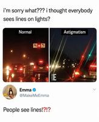
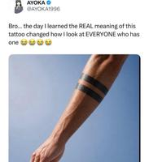

An anonymous reader quotes a report from 404 Media: On Reddit, Hacker News and other places where people in software development talk to each other, more and more people are becoming disillusioned with the promise of code generated by large language models. Developers talk not just about how the AI output is often flawed, but that using AI to get the job done is often a more time consuming, harder, and more frustrating experience because they have to go through the output and fix its mistakes. More concerning, developers who use AI at work report that they feel like they are de-skilling themselves and losing their ability to do their jobs as well as they used to.
"We're being told to use [AI] agents for broad changes across our codebase. There's no way to evaluate whether that much code is well-written or secure -- especially when hundreds of other programmers in the company are doing the same," a UX designer at a midsized tech company told me. 404 Media granted all the developers we talked to for this story anonymity because they signed non-disclosure agreements or because they fear retribution from their employers. "We're building a rat's nest of tech debt that will be impossible to untangle when these models become prohibitively expensive (any minute now...)." "I had some issues where I forgot how to implement a Laravel API and it scared the shit out of me. I went to university for this, I've been a software engineer for many years now and it feels like I am back before I ever wrote a single line of code," the software developer at a small web design firm told 404 Media. "It's making me dumber for sure," the fintech software developer added.
"It's like when we got cellphones and stopped remembering phone numbers, but it's grown to me mentally outsourcing 'thinking' in general. I feel my critical thinking and ability to sit and reason about a problem or a design has degraded because the all-knowing-dalai-llama is just a question away from giving me his take. And supposedly I tell myself ill just use it for inspiration but it ends up being my only thought. It gives you the illusion of productivity and expertise but at the end of the day you are more divorced from the output you submit than before."
A software engineer at the FAANG said: "When I was using it for code generation, I found myself having a lot of trouble building and maintaining a mental model of the code I was working with. Another aspect is that I joined late last year and [the company's] codebase is massive. As a new hire, part of my job is to learn how to navigate the codebase and use the established conventions, but I think the AI push really hampered my ability to do that."
Read more of this story at Slashdot.
Microsoft is adding a Windows Update feature called Cloud-Initiated Driver Recovery that can automatically roll back faulty drivers to a previously known-good version without waiting for hardware makers or users to fix the problem manually. PCWorld reports: The way faulty drivers work today is that the hardware partner is responsible for pushing an updated driver, or the end user is responsible for manually uninstalling the problematic driver. "This creates a gap where devices may remain on a low-quality driver for an extended period," says the blog post. With Cloud-Initiated Driver Recovery, Microsoft will be able to remotely trigger a rollback of the faulty driver to a previously "known-good" version of the driver via the Windows Update pipeline. Microsoft says that testing and verification of Cloud-Initiated Driver Recovery will continue until August this year, aiming to deliver this feature to Windows PCs starting in September.
Read more of this story at Slashdot.
A new Linux local privilege escalation flaw called Fragnesia has been disclosed as a Dirty Frag-like vulnerability, allowing arbitrary byte writes into the kernel page cache of read-only files through a separate ESP/XFRM logic bug. Phoronix reports: Proof of concept code for Fragnesia is already out there. There is a two-line patch for addressing the issue within the Linux kernel's skbuff.c code. That patch hasn't yet been mainlined or picked up by any mainline kernel releases but presumably will be in short order for addressing this local privilege escalation issue. More details can be found here.
Read more of this story at Slashdot.
The German Sovereign Tech Fund has invested 1.2 million euros ($1.4 million USD) in KDE Plasma technologies to help strengthen the structural reliability and security of the desktop environment's core infrastructure, including Plasma, KDE Linux, and the frameworks underlying its communication services. Longtime Slashdot reader jrepin shares an excerpt from the announcement: For 30 years, KDE has been providing the free and open-source software essential for digital sovereignty in personal, corporate, and public infrastructures: operating systems, desktop environments, document viewers, image and video editors, software development libraries, and much more.
KDE's software is competitive, publicly auditable, and freely available. It can be maintained, adapted, and improved in-house or by local software companies. And modifications (along with their source code) can be freely distributed to all users and departments within an organization.
KDE will use Sovereign Tech Fund's investment to push its essential software products to the next level, providing every individual, business, and public administration with the opportunity to regain their privacy, security, and control over their digital sovereignty. Slashdot reader Elektroschock also shared a statement from Fiona Krakenburger, Technical Director at the Sovereign Tech Agency.
"We have long invested in desktop technologies for a reason: they are the primary way people access and use digital services in everyday life," says Krakenburger. "The desktop holds personal data and mediates nearly every service we depend on, from booking the next medical appointment, to education, to the way we work. We are investing in KDE because it is one of the two major desktop environments used across Linux and plays a key role in how millions of people experience open technology. Strengthening KDE's testing infrastructure, security architecture, and communication frameworks is how we invest in the resilience and reliability of the core digital infrastructure that modern society depends on."
Read more of this story at Slashdot.
Harvard faculty are voting on a proposal (PDF) to curb grade inflation by limiting solid A grades to 20% of students in a class, plus four additional A's per course. Axios reports: Grade inflation is at a tipping point at Harvard. A move to make A grades harder to come by at one of the world's leading universities could influence grading debates at peer institutions. Solid A's account for nearly two-thirds of all undergraduate letter grades. That's up from roughly a quarter 20 years ago. More than 50 members of last year's class graduated with perfect GPAs.
[...] Faculty are voting on three separate provisions. Each requires a simple majority to pass. A cap to limit solid-A grades to 20% of enrolled students in a class, plus four additional A's per course. Changes to how internal honors are calculated, moving from traditional grade point average scoring to an average percentile rank. Allowing courses to use new "satisfactory" or "unsatisfactory" marks with a "satisfactory-plus" distinction.
A pre-vote faculty poll showed around 60% of the 205 respondents favored the 20-plus-four formula over an alternative. Supporters of the cap argue it's intentionally modest as it places no restrictions on A-minuses. The four-grade buffer is designed to protect small seminars where a higher proportion of students may succeed. [...] If passed, changes would take effect in fall 2027, followed by a mandatory three-year review.
Read more of this story at Slashdot.
An anonymous reader quotes a report from Reuters: Meta employees distributed flyers at multiple U.S. offices on Tuesday to protest the company's recent installation of mouse-tracking software on their computers, according to photos of the pamphlets seen by Reuters. The flyers, which appeared in meeting rooms, on vending machines and atop toilet paper dispensers at the Facebook owner's offices, encouraged staffers to sign an online petition against the move. "Don't want to work at the Employee Data Extraction Factory?" they asked, according to the photos seen by Reuters. [...]
The pamphlets and the petition both cite the U.S. National Labor Relations Act, saying "workers are legally protected when they choose to organize for the improvement of working conditions." In the UK, a group of Meta employees has started organizing a drive for unionization with United Tech and Allied Workers (UTAW), a branch of the Communication Workers Union. The employees set up a website to recruit members using the URL "Leanin.uk," a reference to former Chief Operating Officer Sheryl Sandberg's best-selling book encouraging women to seek equal footing in the workplace. "Meta's workers are paying the price for management's reckless and expensive bets. While executives chase speculative AI strategies, staff are facing devastating job cuts, draconian surveillance, and the cruel reality of being forced to train the inefficient systems being positioned to replace them," said Eleanor Payne, an organizer with UTAW. "If we're building agents to help people complete everyday tasks using computers, our models need real examples of how people actually use them -- things like mouse movements, clicking buttons, and navigating dropdown menus," said a statement Meta issued earlier.
Read more of this story at Slashdot.
Ancient Slashdot reader ewhac writes: CERN, a longtime Open Source pioneer, has made several contributions over the years to KiCad ("KEE-kad"), an Open Source EDA (Electronic Design Automation) package widely used in the hobbyist and professional electronics communities. It's gotten so widely used that users can now submit their KiCad design files directly to several electronics fabricators (rather than the traditional step of converting the layouts to Gerber files). Over the years, CERN has also developed their own symbol and footprint libraries to support their own internal electronic designs. Last week, CERN released those KiCad component libraries, containing over 17,000 symbols, under the CERN Open Hardware License.
Read more of this story at Slashdot.
fjo3 shares a report from Phys.org: Ever felt like mosquitoes bite you while ignoring everyone else? Scientists are now making progress in deciphering the complex chemical cocktail that makes particular people more enticing to these disease-spreading bloodsuckers. "It's not a misconception -- mosquitoes are attracted to some people more than others," Frederic Simard of France's Institute of Research for Development told AFP. "But we are not all magnets all the time," the medical entomologist added.
A range of sensory cues can cause mosquitoes to pick one human over another -- mainly the smell and heat our bodies give off, and the carbon dioxide we exhale. Female mosquitoes -- which are the only ones that bite -- detect these signals with finely tuned receptors, then choose their target accordingly. "We have known for over 100 years that mosquitoes are attracted by the carbon dioxide that we exhale -- this is the first signal that triggers their behavior" when they are dozens of meters away, Swedish scientist Rickard Ignell told AFP. Within around 10 meters, "mosquitoes will start detecting our odor, and in combination with carbon dioxide," this attracts them even more, said the senior author of a recent study on the subject. As they get closer, body temperature and humidity make particular humans even more enticing.
[...] For Ignell's recent study, the researchers released Aedes aegypti mosquitoes -- known for spreading yellow fever and dengue -- on 42 women in a lab, to see which ones they preferred. "We have shown that mosquitoes use a blend of odorous compounds (we identified 27 that the mosquitoes will detect, out of the possible 1,000) for their attraction to us," Ignell said. The woman the mosquitoes most liked to bite -- which included pregnant women in their second trimester -- produced a large amount of a particular compound made by a breakdown of the skin oil sebum. That even a small increase of this compound -- called "1-octen-3-ol", or mushroom alcohol -- made a difference came as a surprise, Ignell emphasized.
Read more of this story at Slashdot.
A man accused of stealing hard drives containing unreleased Beyonce music, tour plans, and other materials from a rental car in Atlanta has pleaded guilty and accepted a five-year sentence, including two years in custody. Slashdot Bruce66423 shares a report from The Guardian: Kelvin Evans was by the Atlanta police department in September in connection to a July 2025 car robbery where two suitcases containing Beyonce music and tour plans were stolen from a rental car. [...] According to a July police report, Beyonce choreographer Christopher Grant and dancer Diandre Blue called 911 to report a theft from their rental vehicle, a 2024 Jeep Wagoneer, before Beyonce's Cowboy Carter tour dates in Atlanta. An October indictment stated that Evans entered the car on July 8 "with the intent to commit theft."
The stolen hard drives contained "watermarked music, some unreleased music, footage plans for the show and past and future set list," according to a police report. Clothing, designer sunglasses, laptops and AirPods headphones were also stolen, Grant and Blue said. Local law enforcement searched for the location of one of the stolen laptops and the AirPods to try and locate the property. One police officer wrote in the report: "I conducted a suspicious stop in the area, due to the information that was relayed to me. There were several cars in the area also that the AirPods were pinging to in that area also. After further investigation, a silver [redacted], which had traveled into zone 5 was moving at the same time as the tracking on the AirPods."
Evans was arrested several weeks after Grant and Blue filed a report, and was publicly named as the suspect in September. He was released on a $20,000 bond a month later. At the time of his arrest, Atlanta police said that the stolen property had not been recovered. It is unclear whether it has since been found.
Bruce66423 commented: "Just for stealing a couple of suitcases from a car. Funny how the elite punish those who inconvenience them. Can you imagine an ordinary victim see their offender get that sort of sentence?"
Read more of this story at Slashdot.
BrianFagioli writes: SOLAI has launched the Solode Neo, a $399 Linux-based mini PC designed for always-on AI agents, browser automation, and persistent developer workflows. The compact system ships with an Intel N150 processor, 12GB LPDDR5 memory, 128GB SSD storage, Gigabit Ethernet, WiFi, Bluetooth, and a Linux-based operating system called Solode AI OS. The company says the device supports frameworks and tools including Claude Code, OpenAI Codex, Gemini CLI, and Hermes, while emphasizing local control, automation, and privacy-focused workflows running directly from a home network.
While SOLAI markets the Solode Neo as an "AI computer," the hardware itself appears aimed more at lightweight automation and cloud-assisted agent tasks than heavy local inference. The low-power Intel N150 should be sufficient for browser automation, scheduling, monitoring, containers, and smaller AI workloads, but the system is unlikely to compete with higher-end local AI hardware designed for running larger models offline. Even so, the idea of a dedicated low-power Linux appliance for persistent AI and automation tasks may appeal to homelab users and self-hosting enthusiasts looking for a simpler alternative to building their own always-on workflow box from scratch.
Read more of this story at Slashdot.
OpenAI CEO Sam Altman took the stand Tuesday in Elon Musk's trial against the company, testifying that Musk repeatedly sought control of OpenAI before leaving in 2018. Altman said he opposed putting AI "under the control of any one person," while Musk's lawyer used a pointed cross-examination to attack Altman's trustworthiness. An anonymous reader shares updates from the testimony via the New York Times: Before Elon Musk left OpenAI in a power struggle in 2018, he wanted to merge the nonprofit artificial intelligence lab with Tesla, his electric car company. Mr. Musk and other OpenAI co-founders met several times to discuss the merger. OpenAI's chief executive, Sam Altman, was even offered a seat on Tesla's board of directors, according to a court document. But folding OpenAI into Tesla would have eliminated the lab's nonprofit status, and that, Mr. Altman said on the witness stand on Tuesday, was something he wanted to avoid. [...] "I believed that A.I. should not be under the control of any one person," Mr. Altman said. [...] Mr. Altman testified about his feud with Mr. Musk. He said he had become worried that Mr. Musk, who provided the early investment money for OpenAI, wanted to take control of the lab. He described what he called a "particularly harrowing moment" when his OpenAI co-founders asked Mr. Musk what would happen to his control of a potential for-profit when he died. Mr. Altman said Mr. Musk had replied that the control would pass to his children. "I was not comfortable with that," Mr. Altman said. When Mr. Musk lost a power struggle for control of the lab, he left, forcing Mr. Altman to find another big financial backer in Microsoft.
But Mr. Altman ran into trouble in 2023 when OpenAI's board fired him because, as several of its members have testified in the trial, it didn't trust him. Steven Molo, Mr. Musk's lead lawyer, homed in on Mr. Altman's trustworthiness during an aggressive cross-examination. "Are you completely trustworthy?" Mr. Molo asked. "I believe so," Mr. Altman answered. After questioning Mr. Altman's trustworthiness for nearly 20 minutes, Mr. Molo turned to Mr. Altman's relationship with Mr. Musk. Mr. Altman said that after he met Mr. Musk in the mid-2010s, Mr. Musk had occasionally expressed concern about the dangers of A.I. But Mr. Musk spent far more time saying he was worried that companies like Google would get ahead in A.I. development, Mr. Altman said. (Mr. Musk testified in the trial that he had wanted to create OpenAI to prevent Google from controlling the technology.)
Mr. Altman, the lawyer intimated, took advantage of Mr. Musk's concerns and was never sincere about his own A.I. fears. "Are you a person who just tells people things they want to hear whether those things are true or not?" Mr. Molo asked. The lawyer also questioned whether Mr. Atman, who became a billionaire through years of tech investments, was self-dealing through OpenAI. Mr. Molo showed a list of Mr. Altman's personal investments across a number of companies that stand to benefit from their association with OpenAI. They included Helion Energy, a start-up that has deals with Microsoft and OpenAI, and Cerebras, a chip maker in business with OpenAI. Mr. Molo asked if Mr. Altman, who is on OpenAI's board as well as its chief executive, would ever fire himself. "I have no plans to do that," Mr. Altman said.
OpenAI's odd journey from nonprofit lab to what it is today -- a well-funded, for-profit company that is still connected to a nonprofit called the OpenAI Foundation with an endowment that could be worth more than $130 billion -- provided grist for Mr. Molo's questions about Mr. Altman's motivations. He implied that Mr. Altman could have continued to build OpenAI as a pure nonprofit. But the only way to build such a valuable charity was to raise billions through a for-profit venture, Mr. Altman responded. Still, the giant sums being raised appeared to upset Mr. Musk. In late 2022, according to court documents, Mr. Musk sent a text to Mr. Altman complaining that Microsoft was preparing to invest $10 billion in OpenAI. "This is a bait and switch," Mr. Musk said at the time. But Mr. Altman, under questioning from his own lawyers, said: "Every step of the way, I have done my best to maximize the value of the nonprofit. I would point out that there are not a lot of historical examples of a nonprofit at this scale." Before Altman took the stand, OpenAI board chair Bret Taylor continued his testimony that began on Monday. He said Elon Musk's 2024 bid to buy the company's assets appeared to conflict with his lawsuit and was rejected because the board did not believe OpenAI's mission should be controlled by one person. "We did not feel like it was appropriate for one person to control our mission," he said.
Recap:
Microsoft CEO Satya Nadella Testifies In OpenAI Trial (Day Nine)
Sam Altman Had a Bad Day In Court (Day Eight)
Sam Altman's Management Style Comes Under the Microscope At OpenAI Trial (Day Seven)
Brockman Rebuts Musk's Take On Startup's History, Recounts Secret Work For Tesla (Day Six)
OpenAI President Discloses His Stake In the Company Is Worth $30 Billion (Day Five)
Musk Concludes Testimony At OpenAI Trial (Day Four)
Elon Musk Says OpenAI Betrayed Him, Clashes With Company's Attorney (Day Three)
Musk Testifies OpenAI Was Created As Nonprofit To Counter Google (Day Two)
Elon Musk and OpenAI CEO Sam Altman Head To Court (Day One)
Read more of this story at Slashdot.
South Korea's presidential policy chief is calling for a "citizen dividend" that would return some AI-driven profits and tax revenue to the public. The Straits Times. From the report: Presidential policy chief Kim Yong-beom said in a Facebook post that a portion of the profits and tax revenue derived from the artificial intelligence boom "should be structurally returned to all citizens." That is because, Mr Kim argued, the economic gains from AI are based at least partly on industrial infrastructure built by the country over five decades. Mr Kim's comments come after tens of thousands of people gathered outside Samsung's main chip hub in April to demand employees get a greater share of AI profits. The company's labour union wants 15 per cent of operating profit handed to chip-division employees.
The union has threatened an 18-day strike starting May 21. Workers have pointed to rising payouts at SK Hynix, which in 2025 agreed to allocate 10 per cent of its annual operating profit to a performance bonus pool, as evidence they deserve more pay. "Excess profits in the AI era are, by nature, concentrated," Mr Kim wrote. Memory companies, core engineers and asset holders are highly likely to receive substantial benefits, while much of the middle class may experience only indirect effects.
Read more of this story at Slashdot.
Instructure, the company behind the widely used Canvas learning platform, says it reached an agreement with the hackers who stole 3.5 terabytes of student and university data. The company says it received "digital confirmation" that the information was destroyed and that affected schools and students would not be extorted. The BBC reports: Paying cyber criminals goes against the advice of law enforcement agencies around the world, as it can fuel further attacks and offers no guarantee the data has been deleted. In previous cases, criminals have accepted ransom payments but lied about destroying stolen data, instead keeping it for resale. For example, when the notorious LockBit ransomware group was hacked by the National Crime Agency, police found stolen data had not been deleted even after payments had been made.
Instructure said in a statement on its website that protecting students' and education staff data was its primary motivation. "While there is never complete certainty when dealing with cyber criminals, we believe it was important to take every step within our control to give customers additional peace of mind, to the extent possible," the company said. Instructure did not set out the terms of the agreement but said that it meant that:
- the data was returned to the company
- it received "digital confirmation of data destruction"
- it had been informed that no Instructure customers would be extorted as a result of the incident
- the agreement covers all affected customers, with no need for individuals to engage with the hackers
Read more of this story at Slashdot.
An anonymous reader quotes a report from the Financial Times (via Ars Technica): Amazon employees are using an internal AI tool to automate non-essential tasks in a bid to show managers they are using the technology more frequently. The Seattle-based group has started to widely deploy its in-house "MeshClaw" product in recent weeks, allowing employees to create AI agents that can connect to workplace software and carry out tasks on a user's behalf, according to three people familiar with the matter. Some employees said colleagues were using the software to automate additional, unnecessary AI activity to increase their consumption of tokens -- units of data processed by models. They said the move reflected pressure to adopt the technology after Amazon introduced targets for more than 80 percent of developers to use AI each week, and earlier this year began tracking AI token consumption on internal leader boards.
"There is just so much pressure to use these tools," one Amazon employee told the FT. "Some people are just using MeshClaw to maximize their token usage." Amazon has told employees that the AI token statistics would not be used in performance evaluations. But several staff members said they believed managers were monitoring the data. "Managers are looking at it," said another current employee. "When they track usage it creates perverse incentives and some people are very competitive about it."
Read more of this story at Slashdot.
An anonymous reader quotes a report from Reuters: LinkedIn planned to inform staff of layoffs on Wednesday, two people familiar with the matter told Reuters, in a widening of technology sector cuts this year. The Microsoft-owned social network plans to cut about 5% of its headcount as it reorganizes teams and focuses personnel on areas where its business is growing [...].
LinkedIn employs more than 17,500 full-time workers globally, its website says. Reuters was unable to determine the teams affected. The cuts come as revenue at LinkedIn, which sells recruiting tools and subscriptions, rose 12% in the just-ended quarter from a year prior, in an acceleration of growth in 2026, according to Microsoft's securities filings. The layoff rationale was not for artificial intelligence to replace jobs at LinkedIn, one of the people told Reuters. The specter of AI-fueled disruption has nonetheless hung over software incumbents and workers generally.
Read more of this story at Slashdot.
Tim Craig / Washington Post : Gallup: 70% of Americans oppose local data center construction, citing water and electricity issues, with opposition higher among Democrats than Republicans — The survey found that Republicans and Democrats are uncomfortable living near a data center, but opposition is especially intense among Democrats.
Connor Hart / Wall Street Journal : Klarna reports Q1 revenue up 44% YoY to $1.01B, above est., GMV up 33% to $33.7B, active customers up 20% to 119M, and a $1M profit, up from a $99M loss YoY — The buy now, pay later company said first-quarter revenue jumped 44% to $1.01 billion — Klarna swung to a profit in the first quarter …
Zac Hall / 9to5Mac : Spotify says it will adopt Apple's HTTP Live Streaming tech for video podcasts later in 2026, helping creators distribute podcasts on Apple Podcasts and Spotify — Spotify is making two video podcast announcements today, including one related to Apple's big video podcast enhancement.
Reuters : The UK CMA launches an antitrust investigation into Microsoft's business software dominance, focusing on its bundling of Windows, Word, Teams, and other apps — Britain launched an antitrust investigation into Microsoft's (MSFT.O) dominance in business software that could lead to targeted action …
Kurt Wagner / Bloomberg : Meta President Dina Powell McCormick is traveling with President Trump on his China trip and met King Charles III, indicating she is Meta's new global emissary — The social media company's vice chair is part of the group traveling with Trump to China … Tech Across the Globe
Sherry Qin / Wall Street Journal : SMIC reports Q1 revenue up 11.5% YoY to ~$2.5B and net profit up 5% YoY to ~$197.4M, below $223.6M est., weighed down by higher operating expenses, up 30% YoY — It sees scope for momentum to pick up in the second quarter — SMIC, China's biggest chip foundry, reported weaker …
Wired : As Meta prepares to lay off ~10% of its staff on May 20, sources say morale is low, and Meta forcibly moved 1,000+ engineers to an AI unit to build GenAI models — Next week, Meta is cutting about 10 percent of its staff. WIRED spoke with more than a dozen current and former employees …
Subrat Patnaik / Bloomberg : Blackstone Digital Infrastructure Trust raised $1.75B in its US IPO, selling 87.5M shares at $20 each, and plans to acquire data centers worth $250M to $1.5B — Blackstone Digital Infrastructure Trust Inc. raised $1.75 billion in a US initial public offering, as investors' appetite …
Wall Street Journal : Zhaopin: Chinese graduates returning home from abroad rose 12% YoY in 2025, fueling Beijing's plans to take on Silicon Valley; China is offering big incentives — More Chinese nationals who return home after working in the U.S., called ‘sea turtles,’ are fueling Beijing's efforts to take on Silicon Valley
Wall Street Journal : Foxconn reports Q1 revenue up 29% YoY to ~$67B and net profit up 19% YoY to ~$1.6B, meeting est., as it boosts AI server production, its largest revenue source — Cloud and networking products—including AI servers—remained the company's largest revenue contributor
Max A. Cherney / Reuters : Filing: Jensen Huang's foundation bought $108.3M worth of AI computing time from CoreWeave and is donating it to universities and other nonprofit institutes — The foundation of Nvidia (NVDA.O) CEO Jensen Huang and his wife, Lori, is buying computing time from CoreWeave (CRWV.O) …
Marina Temkin / TechCrunch : Canadian legaltech company Clio says its ARR has reached $500M, citing demand for its AI tools; Clio had a $5B valuation after a $500M Series G in November 2025 — While AI is now being applied to everything from healthcare to customer support, no single use case has yet been nearly as popular or lucrative as code writing.
Reuters : Sources: the US cleared ~10 Chinese companies, including Alibaba, Tencent, ByteDance, and JD.com, to buy Nvidia H200 chips, but no deliveries have been made — The U.S. has cleared around 10 Chinese firms to buy Nvidia's second-most powerful AI chip, the H200, but not a single delivery has been made so far …
Aisha S Gani / Bloomberg : Riyadh-based Stitch, which develops software for banks and financial services companies, raised a $25M Series A led by a16z, its first investment in the Gulf — Andreessen Horowitz is making its first investment in the Gulf with a fundraise for a Saudi startup, as investors continue to sign deals despite the US-Israel war on Iran.
Kenza Bryan / Financial Times : Sources: climate watchdog SBTi drops proposed rules that would limit tech companies' claims that gas-fueled data centers are covered by clean energy investments — Corporate climate watchdog drops stricter proposal on net zero claims after heavy lobbying — Tech groups including Meta …